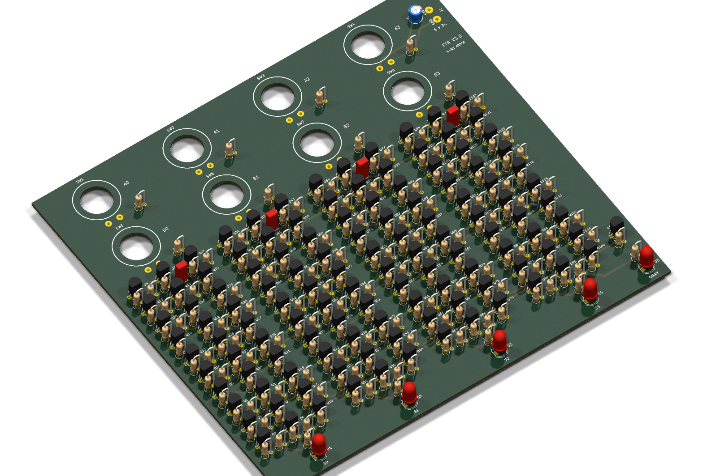

✓ Плюсы
- Исходники, производственные файлы и 3D-модели собраны в одном архиве.
- В проверках проекта нет нарушений DRC, ERC и незаведённых цепей.
- Сохранены положения кнопок и LED исходной платы.
Двухслойная плата, спроектированная в KiCad 10. На странице есть вращаемая модель и полный архив исходников.
Сначала показан обычный вид платы. Нажмите кнопку ниже, чтобы открыть настоящую 3D‑модель из KiCad: её можно вращать пальцем или мышью и масштабировать колёсиком или жестом двумя пальцами.

FTR V3.0 — проект KiCad 10 с платой размером 172,5 × 157,5 мм. Плата двухслойная, толщиной 1,6 мм и с медью 35 мкм.
172,5 × 157,5 мм
2 слоя, 1,6 мм
Регулируемые 5 В
+5V / GND
8 кнопок и 5 LED
DRC и ERC: 0 нарушений
На разъём J1 подаются регулируемые 5 В и GND. Перед подключением питания проверьте полярность приобретённого разъёма.
В проекте предусмотрены 8 кнопок SW1–SW8 и 5 светодиодов D1–D5. Для LED 5 мм: площадка 1 — катод, площадка 2 — анод.
Архив содержит проект KiCad, схему, плату, Gerber-файлы, 3D-модели, спецификацию и отчёты проверок. Временные файлы блокировки не включены.
Скачать архив FTR V3.0 →После распаковки откройте FTRV3.0.kicad_pro в KiCad 10.